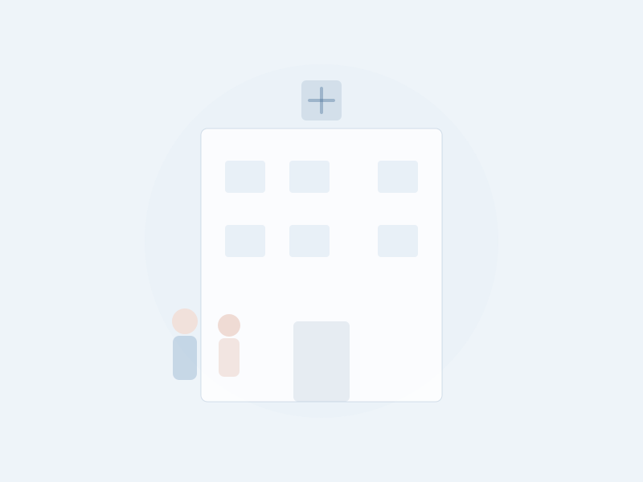

通院の不安を、安心に変える。
ご自宅から病院まで、すべてをサポートします。

ご自宅からの付き添い、受付や会計のサポート、院内での移動介助、お薬の受け取りまで——通院に関わるすべてをワンストップでお手伝いします。定期通院から急な受診まで、ご家族に代わってしっかりサポートいたします。
ご自宅への迎えから病院まで、安全に移動をサポートします。
診察券の提出や保険証の確認、会計の手続きをお手伝いします。
車椅子の操作や歩行の補助など、院内での移動をサポートします。
処方されたお薬の受け取り代行。ご自宅までお届けします。